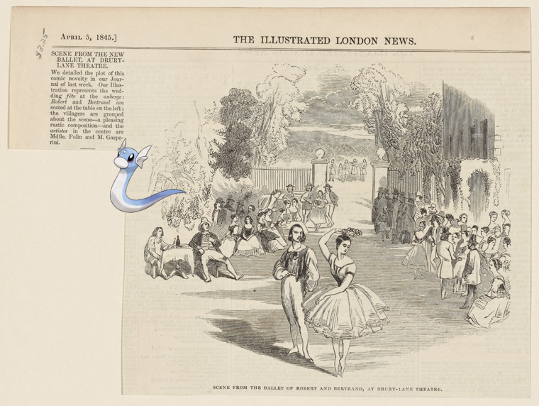

-
 Articuno ; Paysage.!
Articuno ; Paysage.! -
Zygarde ; Pennsylvania Railroad!
-
 Camerupt + The Plaza.
Camerupt + The Plaza. -
, Poochyena + When the harvest days are over. (Jessie dear)
-
Porygon-Z on Habit of a Saxon in 447. Ancien Saxon.
- 
-
![Sharpedo – BREAKFAST [held by] NIPPON PUSEN KAISHA [at]](media/finding-lzEMsrIv.png)
-
, Prinplup on Hotel Astor.
-

-
![Goodra ; Letter to Maj. Gen. [Benjamin] Lincoln http://digitalcollections.nypl.org/items/8dcacab0-c535-012f-b9f6-58d385a7bc34](media/finding-jFBhyEIJ.png) Goodra – Letter to Maj. Gen. [Benjamin] Lincoln!
Goodra – Letter to Maj. Gen. [Benjamin] Lincoln! -

-
 @ Gabor.
@ Gabor. -
 Delibird, Elgyem @ 1903 Nov 6-1905 Apr 30
Delibird, Elgyem @ 1903 Nov 6-1905 Apr 30 -
![Camerupt, Alomomola ; New York State, Double Page Plate No. 34 [Map of Niagara, and Erie Counties]. http://digitalcollections.nypl.org/items/6e83ac20-c5f6-012f-ec3d-58d385a7bc34](media/finding-LMLgRGeL.png) Camerupt, Alomomola | New York State, Double Page Plate No. 34 [Map of Niagara, and Erie Counties].
Camerupt, Alomomola | New York State, Double Page Plate No. 34 [Map of Niagara, and Erie Counties].